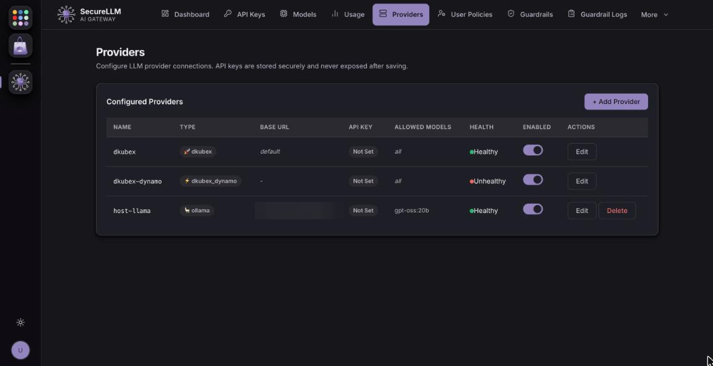
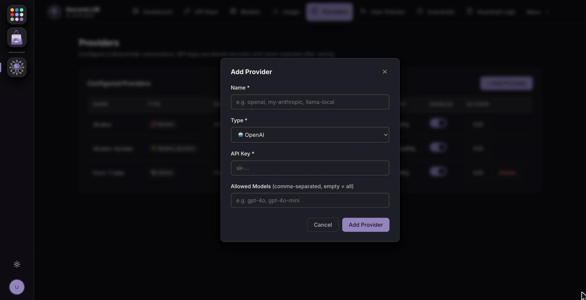
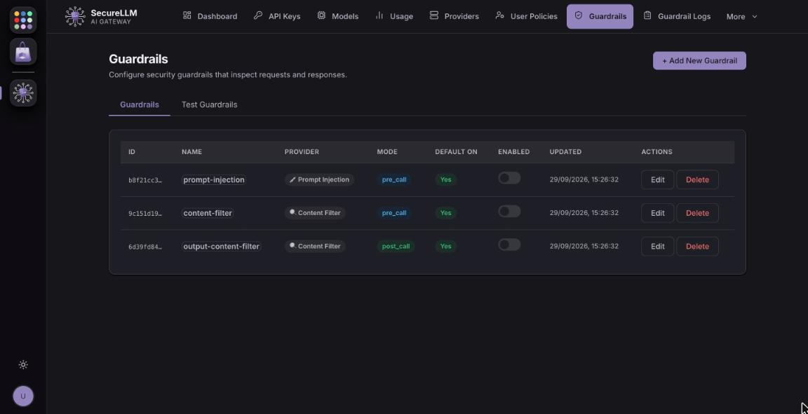
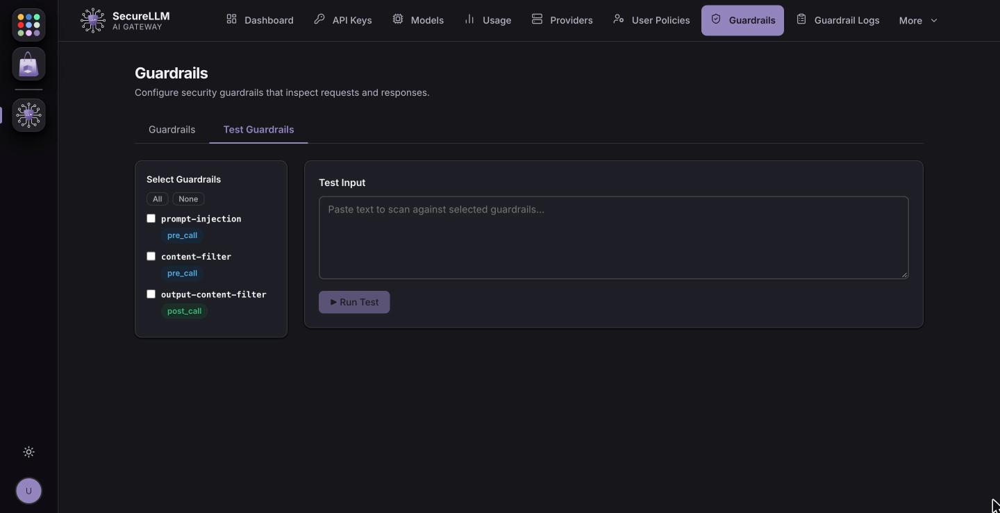

Administrator Features#
Note
Admin pages are only visible if your account has been granted admin access. Contact your SecureLLM administrator if you believe you should have admin rights.
Admins see all four user pages (with organization-wide data) plus seven additional pages: Providers, User Policies, Guardrails, and Guardrail Logs in the top menu, and Audit Logs, Performance, and Settings under More.
Dashboard (admin view)#
Identical to the user dashboard, but all numbers reflect the entire organization — every user’s requests, tokens, and costs (“Overview of API usage across all users”). Use this to monitor overall AI spend and identify which teams or models drive the most usage.
API Keys (admin view)#
The API Keys page (“Manage all API keys”) lists every key in the organization.
The Create New Key card has, besides Key Name and + Create Key, the Allowed Providers and Allowed Models pickers.
The All Keys table shows each key’s Prefix, Name, Owner, Uses, Last Used, Created, Providers, and Allowed Models, with Edit and Revoke buttons.
Usage Logs (admin view)#
The Usage menu item opens the Usage Logs page. For admins it shows the organization-wide request history (“Organisation-wide request history”) with the number of records.
Cards at the top show Total Requests, Success Rate, Avg Latency, and Guardrails Fired (blocked · modified · flagged).
Filter by Provider, App, Status, Guardrails, User, or Date, or type a model, key, or user in Search.
Providers#
Providers are the AI services SecureLLM connects to (e.g., OpenAI, Anthropic, or your organization’s own AI deployment). The Providers page (“Configure LLM provider connections. API keys are stored securely and never exposed after saving.”) lists them in the Configured Providers table, with each provider’s Name, Type, Base URL, API Key, Allowed Models, Health (Healthy or Unhealthy), an Enabled toggle, and Edit and Delete actions.

Adding a provider:
Click Providers → + Add Provider. The Add Provider form opens.
Enter a Name (for example
openai,my-anthropicorllama-local).Select the provider Type from the dropdown (the default is OpenAI).
Enter the provider’s API Key and, if needed, a custom Base URL. (The form shows no Base URL field for the OpenAI type.)
Optionally list Allowed Models, comma-separated (leave blank to allow all models from this provider).
Click Add Provider.

Enabling / disabling a provider:
Use the Enabled toggle in the provider’s row. Disabling pauses routing to that provider without losing its configuration — useful for maintenance or cost control. Only delete a provider when you are certain it will never be used again.
User Policies#
The User Policies menu item opens the User Restrictions page (“Manage allowed providers and models per user.”), where you set access policies for individual users — controlling which providers and models each person can use.
Adding a restriction:
Click User Policies → + Add Restriction.
Enter the user’s email or username.
Specify Allowed Providers and/or Allowed Models (comma-separated).
Click Save.
Setting a spend limit:
In the same form, enter a Spend Limit (USD) and choose how often it Resets (never, daily, weekly, every 30 days or monthly). The limit covers the cost of all requests made with the user’s API keys. Once the user’s spend in the current period reaches the limit, their chat, completion and embedding requests are rejected with a 400 “budget exceeded” error until the period resets, or until you raise the limit or tick Reset spend to $0 now. A request that starts under the limit is allowed to finish, so spend can end slightly above it. Leave the field empty for no limit.
To remove all restrictions and the spend limit from a user (giving them full access), click Remove next to their policy.
Guardrails#
Guardrails are automatic safety filters that inspect AI requests and responses before they reach the AI or your users. The Guardrails page (“Configure security guardrails that inspect requests and responses.”) has two tabs, Guardrails and Test Guardrails, and a + Add New Guardrail button.
The Guardrails tab lists each guardrail’s ID, Name, Provider (the guardrail type), Mode (pre_call checks the request, post_call the response), Default On, an Enabled toggle, Updated, and Edit and Delete actions. Three guardrails are listed out of the box: prompt-injection (Prompt Injection, pre_call), content-filter (Content Filter, pre_call), and output-content-filter (Content Filter, post_call).

Three guardrail types:
Type |
What it does |
|---|---|
Content Filter |
Blocks or masks sensitive content — credit card numbers, passwords, PII (names, phone numbers, etc.) |
Prompt Injection |
Detects attempts to manipulate the AI into ignoring its instructions (jailbreak attempts) |
Custom |
Advanced: accepts a raw JSON configuration for organization-specific rules |
Enabling or disabling a guardrail: Use the Enabled toggle in the guardrail’s row. Changes take effect immediately for all new requests.
Testing a guardrail:
Click the Test Guardrails tab.
Under Select Guardrails, tick one or more guardrails to test (each shows its mode, such as
pre_call), or click All or None.Paste sample text into Test Input.
Click ▶ Run Test.
Results show whether the guardrail triggered, what action it took (block / mask / warn), and how long it took to run.

Guardrail Logs#
Every time a guardrail evaluates a request, it writes a log entry here (“Real-time log of every guardrail execution across all API requests.”). Until a guardrail runs, the page shows “No guardrail events”.
Filter by Guardrail Name or Triggered status (triggered / not triggered), or use Search. Clear resets the filters.
The summary bar shows total events, how many triggered, and the overall pass rate.
Click any row to see the exact text that was flagged and the action taken.
Use this page to verify that your guardrails are catching what they should — and not over-blocking legitimate requests.
Audit Logs#
Audit Logs (under More) record every administrative action taken in SecureLLM: who created or revoked a key, who changed a provider, who updated a user policy — with timestamps and IP addresses.
Filter by actor (admin’s email) or action type (e.g.,
create_key,revoke_key,update_provider).Use this page for compliance reviews or to investigate unexpected changes.
Performance#
The Performance page (under More) shows how the gateway itself is behaving.
Uptime — how long SecureLLM has been running since last restart
Total Requests / 5xx Errors — overall traffic and error counts
Latency by Endpoint — P50, P95, and P99 response times per API endpoint
Tip
P95 latency is the response time that 95% of requests fall under. A spike here usually means a specific provider is slow, not that SecureLLM itself is the bottleneck.
Settings#
The Settings page (under More) sets the “Retention for usage-log payloads and records.”
Log payload storage: “The full request and response of every call is stored as JSON files on the log volume. When the volume fills past the threshold, the oldest files are deleted until the cleanup amount has been freed. The table rows remain, showing their preview only.”
The page shows the volume’s Used space, Capacity, number of Files, Last cleanup, and Location.
Cleanup threshold (% of capacity) — how full the volume can get before the oldest files are deleted.
Space to free (% of capacity) — how much space each cleanup frees.
Database retention: “Only the newest usage records are kept. Older records are deleted together with their payload files.”
The page shows the number of Records and the Last prune.
Maximum records to keep — the number of newest usage records kept.